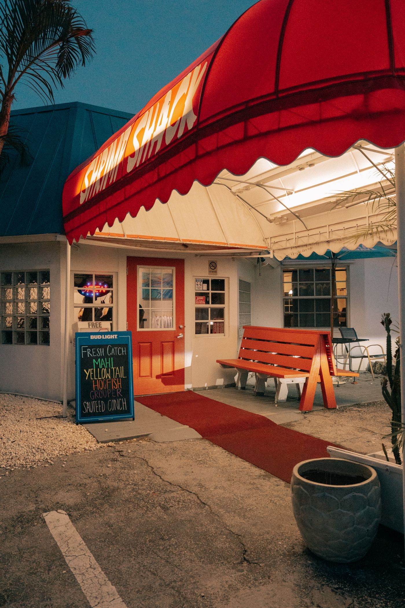
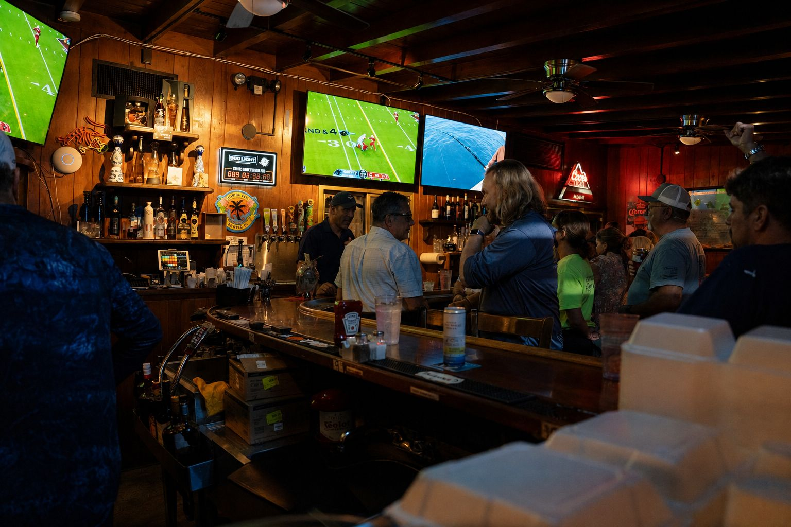
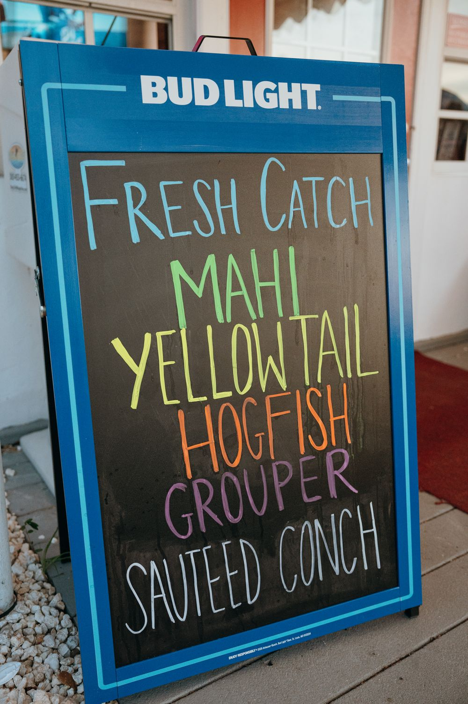
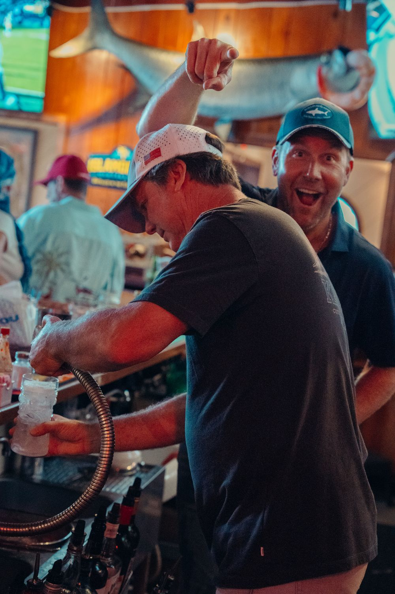
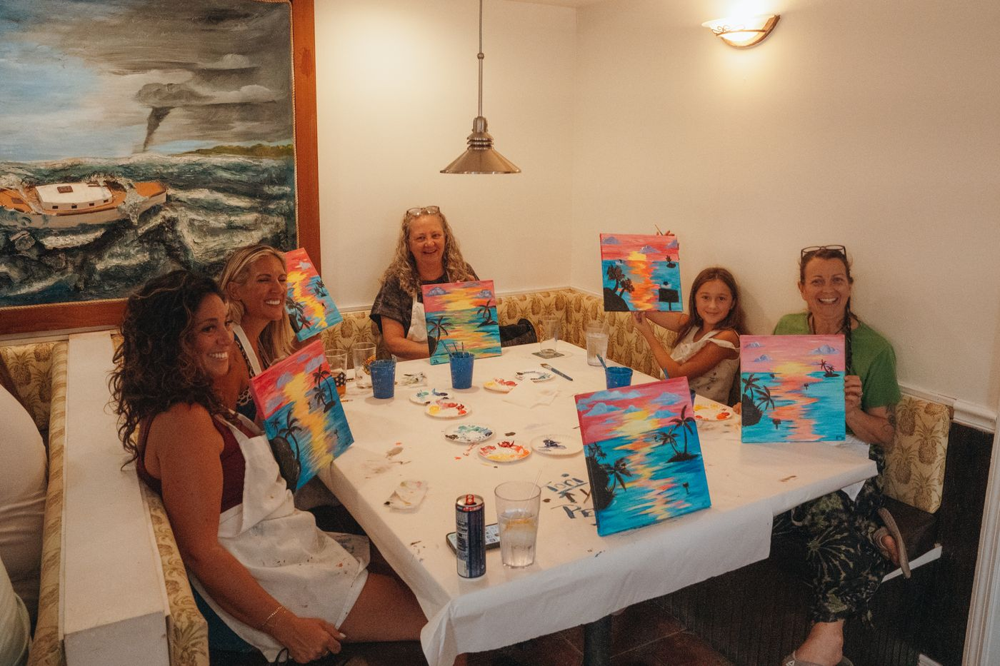
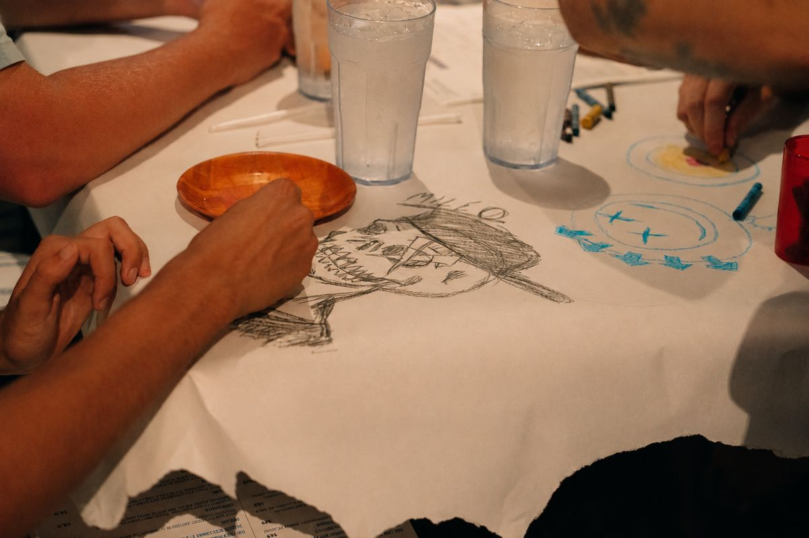

Islamorada, mile marker 82, oceanside
Fresh caught. Family made. Since 2011.
The old-school fish shack Guy Fieri put on Diners, Drive-Ins and Dives. Shrimp fritters, the Continental Style born in this kitchen in 1992, a full bar, and every game on during the season.

The dishes people drive down for
Start with the fritters. Everyone does.

Our Famous Shrimp Fritters
$13.99Six fritters loaded with shrimp, peppers and onions, fried and served with remoulade.

Shrimp N' Grits
$21.99+Shrimp with bell peppers and onions in a creamy Creole sauce over slow-cooked grits. The most mentioned dish in 1,796 Google reviews.

Fish Senator
$25.99+Fresh fish encrusted in almonds, topped with mushrooms, scallions and garlic butter.

Continental Style
$18.99+Panko encrusted, topped with tomatoes, scallions, key lime butter and Parmesan.

Conch Salad
$16.99Caribbean conch, peppers, onions, tomato and freshly squeezed citrus.

Key Lime Pie
$5.99Made every morning. Take a whole one home for $24.
Game day at the Shack
Every game on every screen
The Shack carries the full streaming slate, something no other bar in the Upper Keys does. Whoever you root for, tell the bartender and your game goes on, while the kitchen keeps the fritters and the baskets coming.
Every game, every window, through the late game and Sunday Night Football.
Primetime NFL, kitchen open until 9.
The Gators and whoever you ask for.
[CONFIRM WITH DAVID: NBA, NHL, MLB, UFC and the exact packages carried]


Hook n' Cook
Caught it this morning? Walk it in.
The oldest tradition in the building. Bring your cleaned catch to the bar and the kitchen does the rest, any of the house styles, with sides.
- Continental Style
- Fish Senator
- Piccata
- Grilled
- Blackened
- Cajun fried
- Coconut fried
The Shack is owned by the Poppa Wahoo Collective, the Epstein family's charter fleet docked a mile up the road. Fish the reef in the morning and the kitchen has your mahi on a plate by dinner.
Book a charter with Poppa Wahoo
What guests say
"This feels more like a place the locals would eat, but WOW! The food was outstanding."
Christi R., Google review, 2026
"We brought our own Mahi that we caught just hours before. They cooked some of it Continental style and some Senator style, it was all delicious."
"Reese was our waiter and he was so much fun! He gave us some basic history of Islamorada and the Keys."
Events and catering
Paint nights, private parties, catering from backyard to black tie


The back room seats a full party under the beams, and the kitchen travels: shrimp skewers, ceviche, surf and turf platters, whole key lime pies. Twenty-four hours notice, no minimum order.
Plates, napkins and cutlery are not included with catering orders. Ask about dietary needs before you order and the kitchen will do its best.Hours and directions
Oceanside at 81901, under the red awning
- Thursday to Tuesday
- 11:30 AM to 9:00 PM
- Wednesday
- Closed
Mile marker 82, oceanside. 26 spaces out front.
(305) 664-8433
Shrimpshackislamorada@gmail.com
Before you drive down
Anything else, the bar answers the phone from 11:30.
Yes, by phone at (305) 664-8433. Walk-ins are always welcome.
Both. Order directly at islamoradashrimpshack.com/menu for pickup or delivery, or through the delivery apps.
Yes. Hook n' Cook is the house program: bring your cleaned catch and the kitchen prepares it Continental, Senator, Piccata, grilled, blackened, Cajun fried or coconut fried, with sides.
Yes. The Shack carries the full streaming slate, so every NFL Sunday game, the Monday and Thursday night games, and college Saturdays are all on. Tell the bartender your team.
Yes. For the Little Shrimp is for children 10 and under, with a side included: fried shrimp, ribs, chicken fingers, fish fingers, grilled cheese, burgers, pasta and mac n cheese.
Right on the Overseas Highway at 81901, oceanside, with 26 spaces out front. The red awning is visible from US-1.
Yes. The back room hosts private parties and paint nights, and the kitchen caters with 24 hours notice, no minimum order. Call (305) 664-8433.